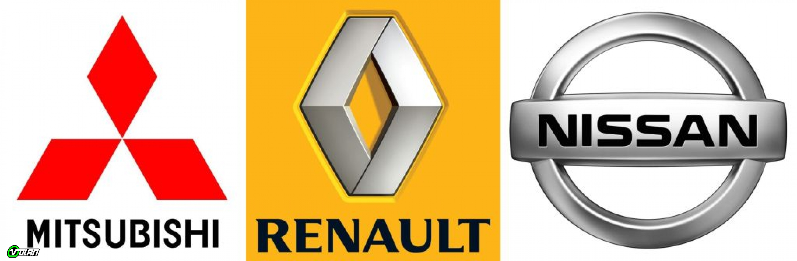
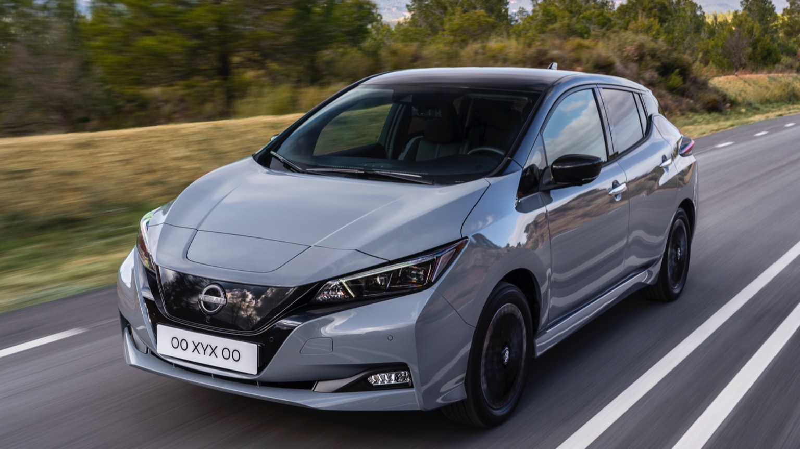
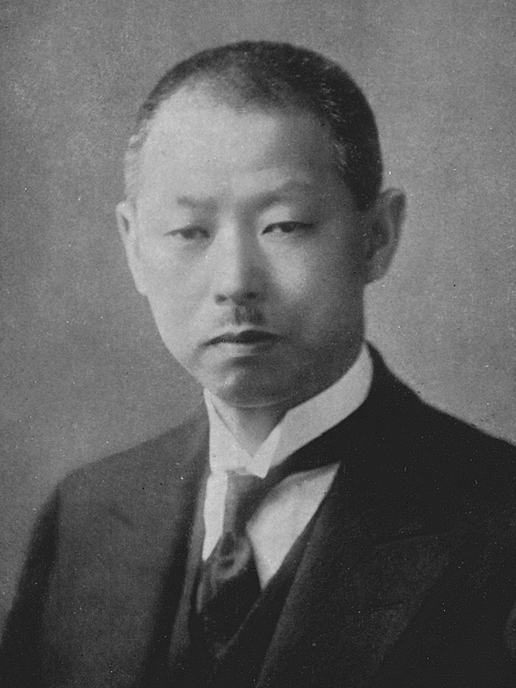
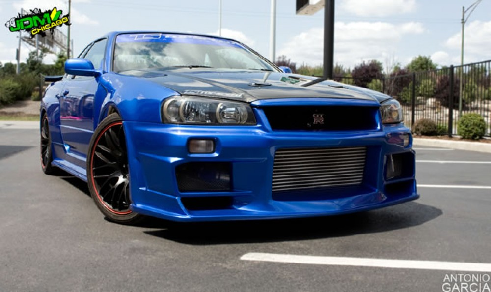
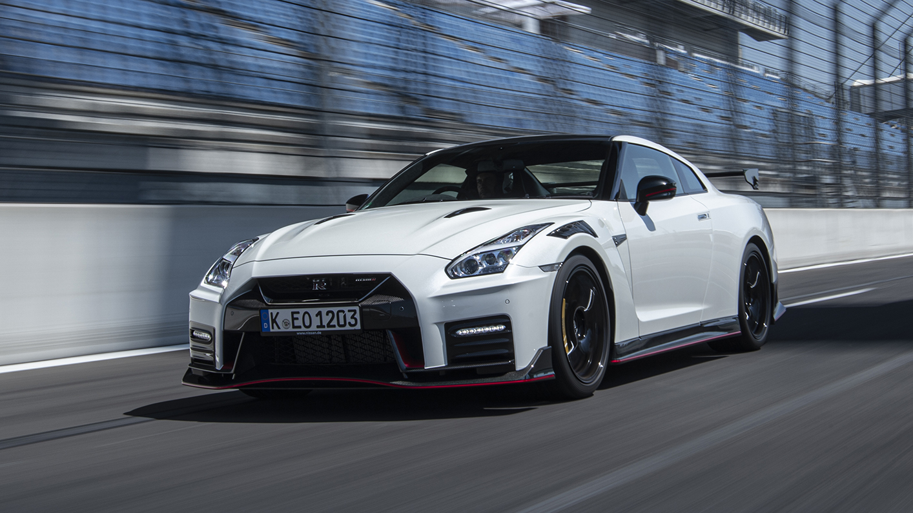
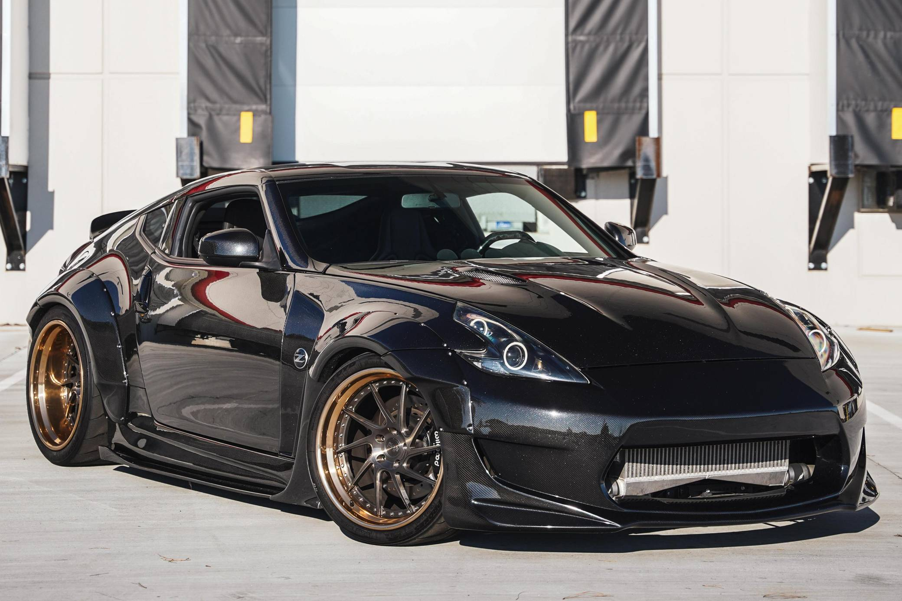
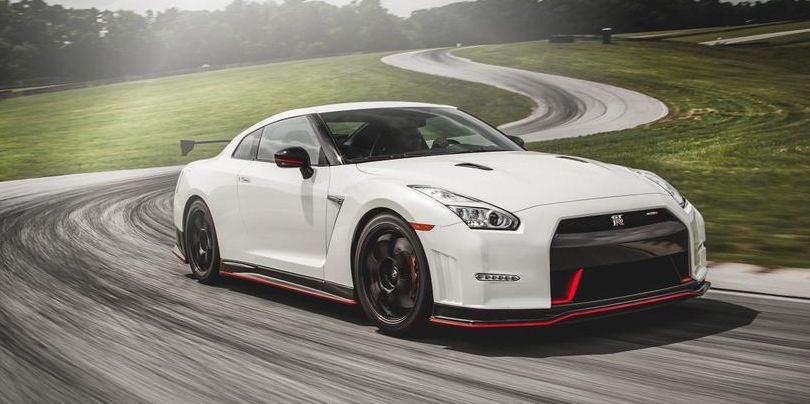

Je Japonska ferma, ki proizvaja avte. Sedež ima v mestu Nishi-ku v Jokoham.Podjetje sega v začetke 20. stoletja z Nissanom zaibatsu , ki se zdaj imenuje Nissan Group. Od leta 1999 je Nissan del zavezništva Renault–Nissan–Mitsubishi

Leta 2013 je bil Nissan šesti največji proizvajalec avtomobilov na svetu, za Toyoto , General Motorsom , Volkswagen Group , Hyundai Motor Group in Fordom. Leta 2014 je bil Nissan največji proizvajalec avtomobilov v Severni Ameriki.Od aprila 2018 je bil Nissan največji svetovni proizvajalec električnih vozil z globalno prodajo več kot 320.000 popolnoma električnih vozil. Najbolje prodajano vozilo v popolnoma električni liniji proizvajalca avtomobilov je Nissan LEAF, drugi najbolje prodajani električni avtomobil na svetu, takoj za Teslo Model 3.

Ime „Nissan“ je nastalo v tridesetih letih prejšnjega stoletja kot okrajšava , ki se je na tokijski borzi uporabljala za Ni hon San gyo. Nissan Group ali prej Nissan zaibatsu je bila ena najmočnejših japonskih poslovnih skupin.Skupina, ki jo je leta 1928 ustanovil Yoshisuke Aikawa.
Yoshisuke Aikawa
Med korejsko vojno je bil Nissan glavni proizvajalec vozil za ameriško vojsko.Leta 1966 se je Nissan združil s podjetjem Prince Motor Company in v svojo ponudbo vključil več avtomobilov višjega razreda, vključno s Skyline in Glorio.
Nissan dela tudi športna vozila, ki so nisan gt-r r34, r35, 370z in še drugi

 
Nissan gt-r Nismo ima 565 ali 600 horsepower. Poganja ga twin-turbocharged 3.8-liter V6 engine. Stane 210,740€.

vsi avto od nissana:
1937–1943 Nissan Type 70 (based on the Graham Paige Crusader)
1937–1941 Nissan 80 Truck (based on the Graham Paige truck)
1937–1941 Nissan 90 Bus
1939–1941 Nissan Type 50
1941 Nissan Type 30
1941 Nissan Type 53
1941–1952 Nissan 180 Truck (based on the 1937–1941 Chevrolet 133/158 trucks)